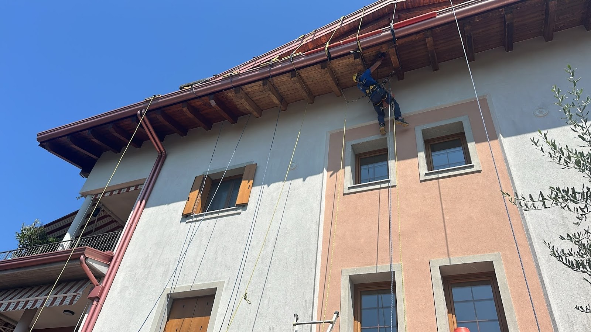
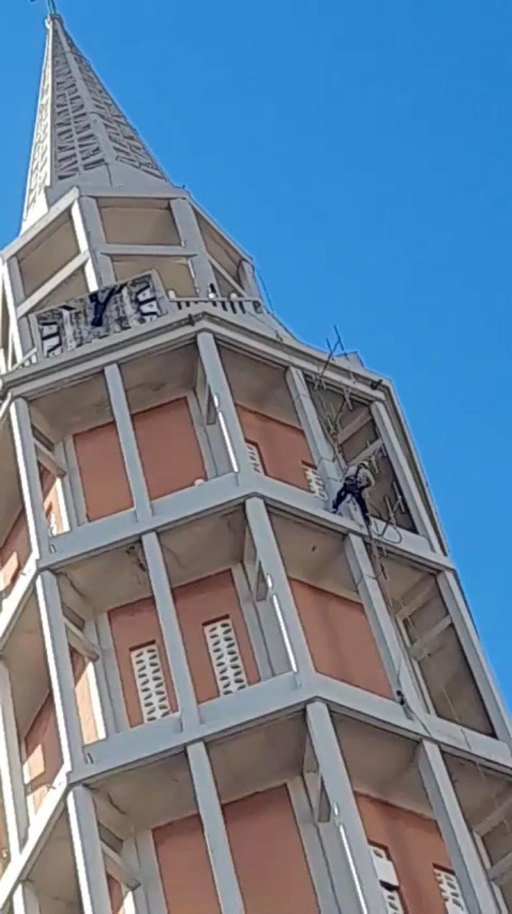
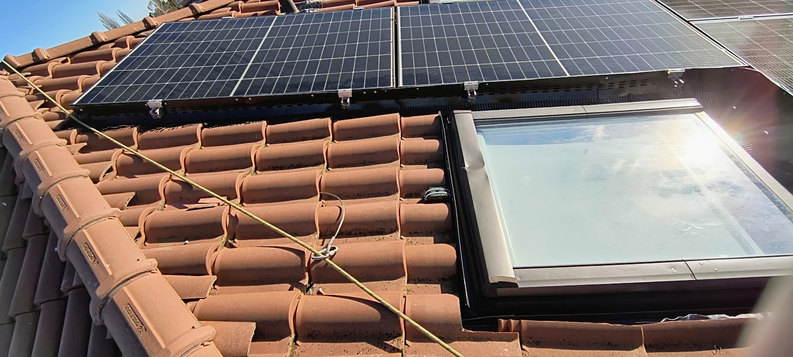
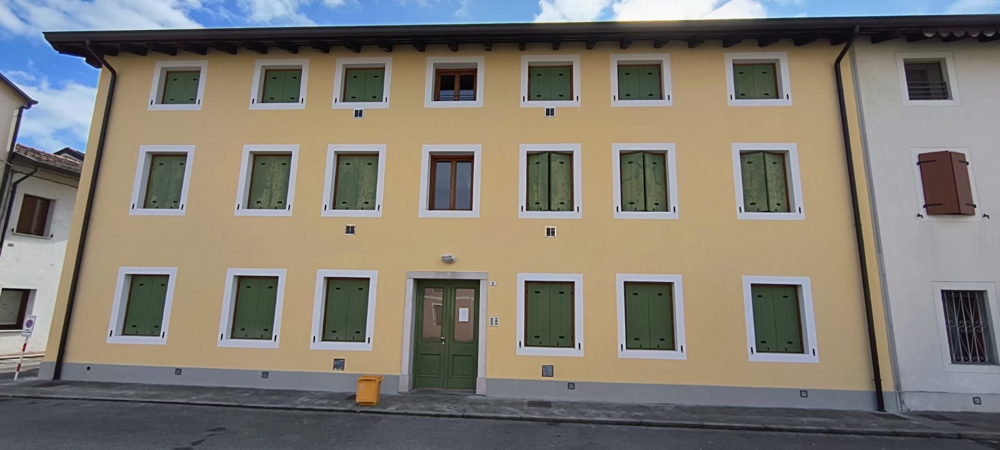

Impresa edile · Udine
Lavori in quota, senza ponteggi.
Tetti, facciate, grondaie e pannelli solari. Ristrutturazioni, manutenzioni e pulizie con accesso su fune, ovunque serva arrivare.




5,0 su Googleda 3 recensioni, tutte a 5 stelle
Su funeNiente ponteggio da montare
Civili e industrialiInterventi su ogni tipo di edificio
Via Buia 11Udine · lun.-ven. 8-18, sab. 8-13
01 Servizi
Dove gli altri montano un ponteggio, noi caliamo una corda.
Interventi rapidi su edifici civili e industriali con sistemi di movimento verticale: meno costi, meno tempi, meno ingombri.
02 Su fune
Dall'alto, un piano alla volta.
- 01AncoraggioLe corde si fissano in sicurezza in alto, sul tetto o sulla struttura.
- 02DiscesaL'operatore scende lungo la facciata con i sistemi di movimento verticale.
- 03InterventoSi lavora nel punto esatto: cornicione, grondaia, vetrata, pannello.
- 04Fine lavoriSi recuperano le corde. Nessun ponteggio da smontare.
Perché su fune.
Niente ponteggio
Nessuna struttura da montare e smontare davanti a casa vostra, niente tubi e tavole che occupano cortile o marciapiede.
Tempi brevi
Si arriva, si lavora, si va via. Chi ci ha chiamato lo scrive: "Sono venuti in tempi brevi".
Preventivo chiaro
Il preventivo lo fa il titolare e il rapporto resta con lui, dall'inizio alla fine del lavoro.
03 Lavori
Foto dai nostri cantieri.
04 Recensioni
Tre clienti, tre volte 5 stelle.
NKD Restauri è una ditta di Udine, in via Buia. Lavoriamo su edifici civili e industriali, con il titolare come riferimento dal preventivo alla fine del lavoro.
"Il lavoro è stato svolto a regola d'arte e in modo accurato. Ottimo anche il rapporto con il titolare."
"Lavori sul tetto eseguiti velocemente ed efficacemente senza la scomodità dell'impalcatura."
"Sono venuti in tempi brevi e si sono dimostrati persone serie e capaci."
05 Preventivo
Diteci cosa c'è da fare, e a che altezza.
Mandateci una foto su WhatsApp: ci aiuta a capire il lavoro prima del sopralluogo.
- Telefono e WhatsApp366 876 7523
- IndirizzoVia Buia 11, 33100 Udine
- OrariDal lunedì al venerdì 8:00-18:00, sabato 8:00-13:00
Via Buia 11
33100 Udine UD